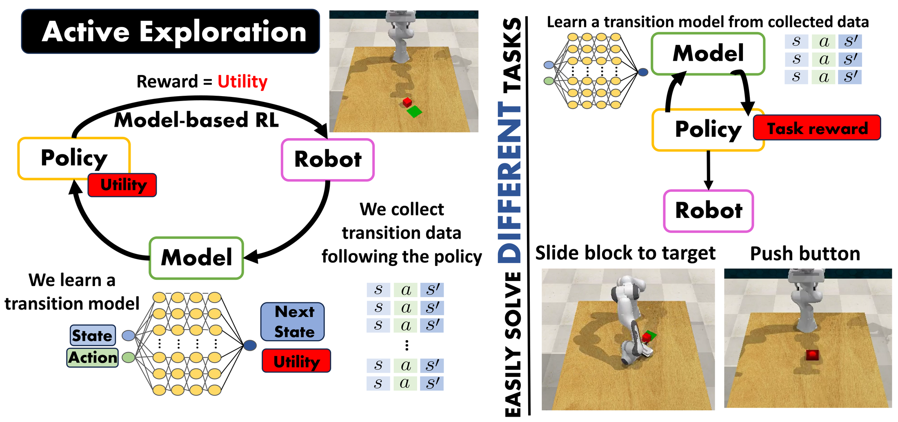
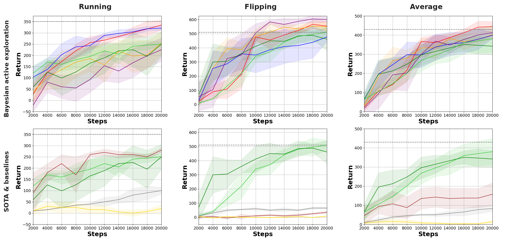
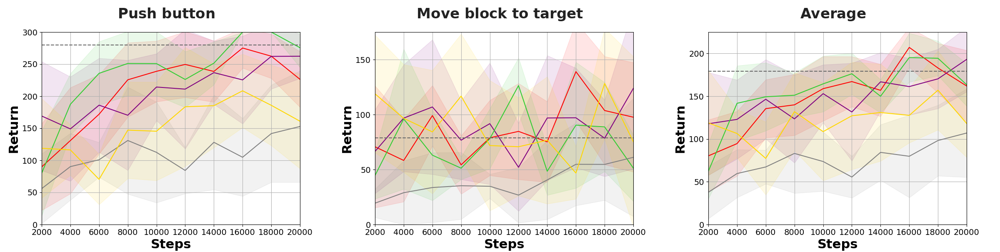

Abstract
Efficiently tackling multiple tasks within complex environments, such as those found in robot manipulation, remains an ongoing challenge in robotics and an opportunity for data-driven solutions such as reinforcement learning (RL). The high cost of data gathering in robotics encourages data-efficient approaches such as model-based RL, which builds a dynamic model of the robot to conduct most policy learning on cheaper simulations, while enabling data reuse and transfer between tasks. In this work, we employ Bayesian deep learning (BDL) with a double purpose. First, we increase the model quality by improving its calibration. Second, we improve data efficiency by performing active learning of the dynamic model during a preliminary exploration phase, actively estimating the information gain of each transition and using it as the exploration reward. We compare several BDL methods in a realistic robot manipulation setup. Our experiments show that our approach matches the quality of relevant alternatives with much lower robot execution requirements and, unlike previous studies validated only on standard RL environments, we tackle robotic arm end-tasks on a complete manipulator simulator such as CoppeliaSim.

The Panda arm in CoppeliaSim
Task policies are learnt entirely inside the dynamics model, trained only on the exploration data, and then executed on the simulated Franka Emika Panda. The robot is controlled directly in joint velocities (|S| = 43, |A| = 8), so the model must also learn the arm's kinematics and dynamics.
Evaluation episodes of LapMCEnt (Laplace approximation + entropy utility).
Contributions
Method
We split learning into two stages. Exploration is task-agnostic: no task reward is used, so the collected data and the learnt model can be reused for any task in the same environment.
1 · Active exploration
After 256 random warm-up steps, the model is re-fitted every 25 steps. SAC then learns, inside the model, a policy that maximises the expected information gain, and the robot executes it to collect new transitions.
2 · Solve the tasks
For every task, a model is trained on the exploration buffer and SAC learns the task policy on simulated rollouts. Only the final evaluation episodes are executed on the robot.
Bayesian dynamics models
The model predicts the next state as a Gaussian, p(s′ | s, a, θ) = 𝒩(μθ(s, a), σθ(s, a)), which captures the aleatoric noise. To know what the model does not know, we also need the epistemic uncertainty over the weights, p(θ | 𝒟). We compare three approximations, each with N = 32 posterior samples:
- Deep ensembles (MAX baseline): 32 independently trained networks. Accurate, but 32× the training cost and memory, and they cannot be pretrained or fine-tuned.
- MC dropout: a single network with dropout (p = 0.25) kept active at inference, using 32 stochastic forward passes.
- Laplace approximation: a Gaussian posterior around the MAP weights, p(θ | 𝒟) ≈ 𝒩(θMAP, H−1), fitted with Laplace Redux on a subnetwork of the 1k largest-magnitude weights. We draw 32 weight samples from it.
Exploration utility
The exploration reward is the expected information gain of a transition, i.e. how much observing it would change the model posterior. Following MAX, it is the Jensen–Shannon divergence between the posterior samples: the total predictive entropy minus the expected aleatoric entropy. It is high where the model lacks information, not where the data is merely noisy:
u(s, a) = ℋ( 𝔼θ[ p(s′ | s, a, θ) ] ) − 𝔼θ[ ℋ( p(s′ | s, a, θ) ) ]
MAX approximates the first term, the entropy of a Gaussian mixture, with the Rényi entropy (α = 2). We instead moment-match the mixture with a single Gaussian. Assuming homoscedastic aleatoric noise, the utility then reduces to the log-determinant of the epistemic covariance. This entropy metric has a closed form for both the Laplace approximation and sample-based models:
u(s, a) ≐ log | 1/N Σi μθi μθi⊤ − μM μM⊤ |
Results
We evaluate the exploration buffer every 2k steps by solving each task with a policy learnt in the model. Curves show the mean and standard deviation over 3 exploration runs. The dashed line is model-free SAC trained for 200k steps on each task, while our pipeline explores for only 20k steps shared by all tasks.
HalfCheetah (MuJoCo)

Panda robot (CoppeliaSim / RLBench)

Calibration and computational cost
We measure calibration with the Area Under the Sparsification Error (AUSE) between the prediction errors and the utility. Each model is trained on the first 18k exploration transitions of HalfCheetah and tested on the last 2k.
| Model | AUSE ↓ | Training (s) ↓ | Inference (s) ↓ | Memory |
|---|---|---|---|---|
| MAX (32-ensemble) | 0.075 | 122.75 | 6.25e-3 | 32× |
| LapMCEnt (ours) | 0.048 | 39.98 | 6.00e-3 | 2× |
| MCdropRényi (ours) | 0.085 | 34.35 | 6.91e-3 | 1× |
Memory is relative to a single MLP with about 1M weights (𝒪(nens · nweights + nsubnet2)). Our models match or exceed MAX while greatly reducing training time and memory, and the Laplace model with the entropy metric is also the best calibrated.
Acknowledgments
This work was supported by a DGA scholarship, DGA project T45_23R, and by grants PID2024-159284NB-I00 and PID2024-158322OB-I00 funded by MCIN/AEI/10.13039/501100011033 and ERDF. The code builds on Model-Based Active Exploration (MAX) and uses Laplace Redux and RLBench.
BibTeX
@inproceedings{plou2026activeexploration,
title={Active Exploration in Bayesian Model-based Reinforcement Learning for Robot Manipulation},
author={Plou, Carlos and Murillo, Ana C. and Martinez-Cantin, Ruben},
booktitle={ROBOT 2026},
year={2026}
}